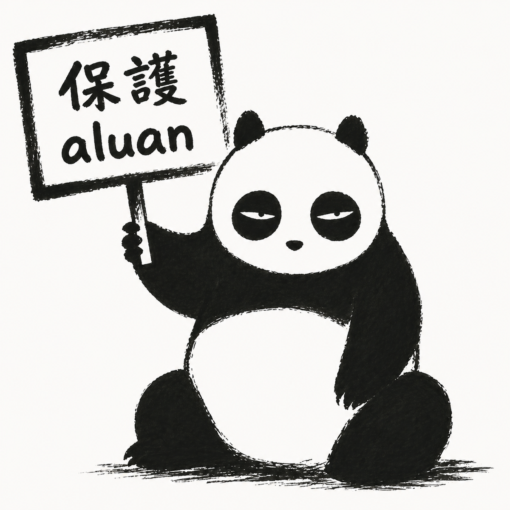

— Sol LeWitt · Paragraphs on Conceptual Art · 1967
+ 60 yrs
「自我歸檔，是新的自畫像。」“Self-archiving is the new self-portrait.”
“Self-archiving is the new self-portrait.”自我歸檔，是新的自畫像。
— Aluan Wang · 王新仁 · 2026
LeWitt 削去作者。我把作者放回來── 放回的不是手，是可被別人接續的結構。LeWitt removed the author. I put the author back — not the hand, but a structure others can continue.
我不創造圖像，我建構的是能記住決策如何發生的系統。
在我的作品裡，繪畫存在於時間之中，而不是形式之上。
你所看到的不是結果，而是人類意圖殘留下來的痕跡。I don't create images. I build systems that remember how decisions were made.
In my work, painting exists in time, not in form.
What you see is not the outcome, but the residue of human intention.
01c — Structure
03 — 從取樣開始，從濾波結束03 — Start with Sampling, End with Filtering
從取樣開始，從濾波結束Start with Sampling, End with Filtering
early Pure Data work · 2010s
早期用 Pure Data 創作。Pd 是圖像化的程式語言，其中有個功能叫陣列（array）。
I started making work with Pure Data. Pd is a visual programming language with a core feature: the array.
一排格子，每格存一個數值。關鍵在於怎麼讀：
A row of cells, each holding a number. The key is how you read it:
照順序讀Read sequentially
一段聲音A sound clip
慢速讀Read slowly
聲音變低、變長Pitch drops, duration stretches
快速讀Read fast
聲音變高、壓縮Pitch rises, time compresses
亂數跳讀，限制大三度Random jumps, capped at major thirds
和諧的旋律A harmonious melody
當 MIDI 譜讀Read as MIDI score
一首曲子A composition
當封包讀Read as envelope
一個音色的形狀The shape of a timbre
資料沒變，容器沒變。變的是讀取的方式。 建立資料集只是開始。設定讀取的方法，才有意思。The data didn't change. The container didn't change. Only the way you read it did. Building the dataset is just the start. Designing how to read it — that's where it gets interesting.
The same hash can be read as visuals — or as a musical score. Cells are arrays, the index is a clock — the sequencer reads pitch, the drum machine reads triggers. Same structure, different reading.
From field recordings to satellite imagery, from wave function collapse to Morse code. Four works, one thread: what data you choose to collect, how you map it — that determines what history looks like.
06 — Deep Dive · 混沌 · 2021–2206 — Deep Dive · Chaos · 2021–22
Chaos 三部曲：作品吃作品The Chaos Trilogy: Art Feeding on Art
GeoPunk 取樣地球。Chaos 取樣自己。 作品以前作為原料，層層遞迴，生成新的混沌。
GeoPunk sampled the Earth. Chaos sampled itself. Each piece consumes its predecessors, recursing layer by layer into new chaos.
Chaos Research
2021.12 · fxhash（Tezos）2021.12 · fxhash (Tezos)
在 Perlin Noise 流場之上疊加一層神秘訊號——源自我自己的 NFT 收藏。收藏品經變形，成為粒子、顏色、造型的隱藏基底。藏在 IPFS 程式碼裡。A hidden signal layered on top of Perlin Noise flow fields — sourced from my own NFT collection. Collected works, transformed, became the secret foundation for particles, colors, and forms. Buried in the IPFS code.
自我取樣Self-samplingIPFS 隱藏檔Hidden IPFS files
Chaos Memory
2022.04 · fxhash
按 Q / W / E / R 切換長方形、正方形、圓形。IPFS 裡藏著透納的畫作局部、Research 的圖片、Memory 自身。加密回文：ILEIVOIVM。Press Q / W / E / R to toggle rectangles, squares, circles. Hidden in IPFS: fragments of Turner paintings, Research images, and Memory itself. Encrypted palindrome: ILEIVOIVM.
透納取樣Turner sampling自我遞迴Self-recursion
Chaos Culture
2022.05 · Art Basel HK
再次萃取 Research 與 Memory。圓形構圖如培養皿，等高線如俯視衛星地圖。巴塞爾藝博會香港現場發表。三幕劇的終章。Research and Memory distilled once more. Circular compositions like petri dishes, contour lines like satellite maps. Premiered at Art Basel Hong Kong. The final act of a three-part play.
同一份前作，可以被讀成素材，也可以被讀成下一件作品。Research, Memory, Culture.
Sampling and distilling are, at their core, akin to encryption and decryption.
The same prior work can be read as raw material — or as the next piece.
06a — Peak + Defense
Peak 跟它的防禦工事Peaks and Their Defense
“ChatGPT is a blurry JPEG of the web.”
ChatGPT，是網路的模糊 JPEG。
— Ted Chiang · The New Yorker · 2023
咀嚼後，別只想著吐出自己的意識。要留下 peaks。但 peak 不會自動存活。同時也要建造保護 peak 的結構：可索引、可引用、可被 fork。藝術家現在的工作，是同時做尖峰，跟做尖峰的防禦工事。After chewing, don't just spit your consciousness back out. Leave peaks behind. But peaks don't survive on their own. You also have to build the structures that protect them: indexable, citable, forkable. The artist's job now is to make peaks and build their defense at the same time.
防禦工事不能讓壓縮變成無損，只能保留可回查的原件。 .md 分身保不住 token-level 的非典型性，這是極限。Defense can’t make compression lossless. It only keeps the original retrievable. The .md self-archive can’t preserve token-level idiosyncrasy. That’s the limit.
Chaos 是 peak。這份 deck 是它的防禦工事。Chaos is peak. This deck is its defense.
06b — Protect the Artist
保護藝術家Protect the Artist

「保護藝術家，讓反抗份子證明人類價值。」
“Protect artists. Let the rebels prove human value.”
藝術家是這個時代的稀有動物。沒人保護，世界就會趨平。Artists are this era's rare animals. Without protection, the world flattens.
06c — 一個人不會真的消失06c — A Person Doesn't Really Disappear
一個人不會真的消失A Person Never Truly Disappears
幾年前，一個朋友走了。
A few years ago, a friend passed away.
有天我在 Google 上查一個技術問題，搜尋結果指向一個論壇。 點進去，看見他的回答。
One day I googled a technical question. The results led to a forum. I clicked in — and saw his answer.
他留下了一個錨點。知識被索引，他就沒有完全消失。
He had left an anchor. His knowledge was indexed. He hadn’t disappeared completely.
資料還在
這是保存。this is preservation.
有人接住
這是哀悼。this is mourning.
模型重組
這是失真代理。this is a lossy proxy.
我追求的不是不死， 是讓未來的誤讀有原件可回查。What I’m after isn’t immortality. It’s leaving the future’s misreadings something to verify against.
07 — Methodology
三個問題Three Questions
作品什麼時候算完成？ 誰有權繼續？ 人不在場時，這權利屬於誰？
When is the work complete? Who has the right to continue it? When the maker isn’t there, whose right is it?
07a — 演算法07a — Algorithm
演算法：亂數、隨機、形狀Algorithm: Randomness, Chance, Form
這一頁是亂數、機率與演算法的教學／參考頁。它用範例說明 random()、分布、noise、seed 與 metadata 的基本用途，和前面主投影片的創作敘事區隔。This is a teaching and reference page for randomness, probability, and algorithms. It explains the basic uses of random(), distributions, noise, seeds, and metadata through examples, separate from the artwork narrative in the main slides.
隨機是一條可以被保存的分岔。Randomness is a branch that can be preserved.
08 — Deep Dive · 小說08 — Deep Dive · Novel
《修仙-七玄關》：故事的外部記憶Seven Gates: External Memory for a Novel
一個橫跨宗教、犯罪與超自然的長篇小說。角色在第三章說的話不能跟第一章矛盾，伏筆埋了就要收。
A long-form novel spanning religion, crime, and the supernatural. What a character says in chapter three can't contradict chapter one. Every foreshadowing must pay off.
An amateur experiment. .md holds the worldbuilding, .json holds the segments. The whole book becomes an indexable structure — the LLM only handles one segment at a time, but the rest of the book stays addressable. Long-token output never spirals.
Every segment carries an analysis. When writing chapter five, I trace back through all prior analyses — emotional arcs stay coherent, foreshadowing threads continue correctly.
不要期待 LLM 記住一切。主動幫它建索引。Don't expect the LLM to remember everything. Build the index for it.
Ink wash can be executed. InkField writes every stroke’s timing, pressure, and unpainted space into an event sequence; the engine reads it, the painting appears. The AI isn’t the painter. The AI writes the score.
Every painting's process is a JSON file. Anyone can download it, study it, replay it, then use the same engine to paint their own version.
不是複製成品，是繼承過程。你拿到的不是一張圖，是一套筆法。
It's not copying a finished piece — it's inheriting a process. What you get isn't an image, it's a set of brushstrokes.
作品不是終點。作品是別人的起點。 JSON 讓過程可攜、可學、可延續。A work isn't the endpoint. It's someone else's starting point. JSON makes the process portable, learnable, continuable.
這是工作工具，不是哲學承諾。
問題只有一個：藝術家能不能拿回自我資料化的設計權？This is a working tool, not a philosophical promise.
The only question: can the artist take back the design rights of being turned into data?
13 — 離場前帶走這個13 — Take This With You
留下錨點，讓一切可以被 indexLeave Anchors. Make Everything Indexable.
13b — 你正在決定五年後的常識13b — Tomorrow's Common Sense
你正在決定五年後的常識You're Writing Tomorrow's Common Sense
你今天教的學生，五年後不會翻書、不會 Google。
他們會問 AI。
AI 給他們的答案，取決於今天你寫了什麼、發了什麼、留下什麼可被索引的東西。
你正在決定五年後的常識。
Your students, five years from now, won't open books or use Google.
They'll ask AI.
What AI tells them depends on what you write, publish, and leave indexable today.
You're writing tomorrow's common sense.
↓ 五點處方 · 下一頁↓ five rules · next slide
13c — 留給後來的人13c — For Whoever Comes Next
留給後來的人For Whoever Comes Next
強連結讓你被人記得，弱連結讓你被系統記得。
Strong ties make people remember you. Weak ties make systems remember you.
my prescription · 2026.04
1. 別寫你「是」誰，寫你「怎麼工作」
標籤會被忘，方法會被拿走用
2. 比起被誰提到，更重要是被誰拿去用
open source、template、跑得起來的 demo
引用是社交，使用才會留下痕跡
3. 別只 PO 成品，把卡關和過程也丟出來
dev log、推文、長文、講座錄影
模型最愛吃這種——有上下文、有思路、口語
4. 你自己的東西，自己先 link 一下
作品、文章、repo、talk 互相引用
不是 SEO，是免得被拆成一堆孤點
5. 不要為了好被找到就把自己變窄
你交叉的領域是有結構的——把那結構講出來
你不是「N 個身份其中一個」
你是用同一套方法在做這 N 件事的人
1. Write how you work, not what you are
Labels get forgotten. Methods get reused.
2. Get used, not just cited
Open source, templates, runnable demos.
Citation is social. Usage leaves traces.
3. Show the process, not just the product
Dev logs, threads, long-form writing, recordings.
Models love this — context, reasoning, conversational tone.
4. Cross-link your own work
Connect your pieces, posts, repos, talks.
Not SEO — just don't get fragmented into isolated nodes.
5. Don't narrow yourself for findability
Your cross-domain work has structure. Name that structure.
You're not "one of N identities."
You're one person using the same method across N things.
重點不是讓系統記得你。 是有人來找你的時候，你早就把線索鋪好了。It's not about the system remembering you. It's about leaving enough trail so whoever finds you can keep going.
14 — 結語14 — Closing
15 — Coda
「我不是被取代，我是被執行。」“Not replaced — executed.”
“Not replaced — executed.”「我不是被取代，我是被執行。」
被執行 → 執行程式run as a program
被執行 → 執行死刑put to death
我把自己寫成可執行格式， 也承認那個格式會殺死一部分的我。I wrote myself into an executable format, and admit the format will kill a part of me.